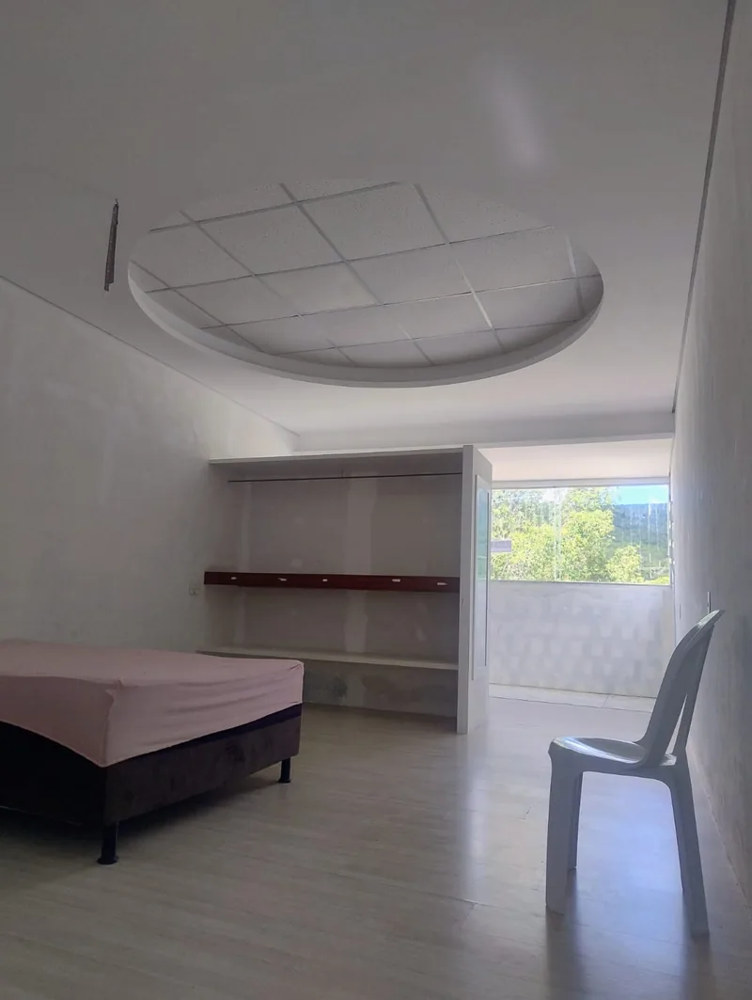
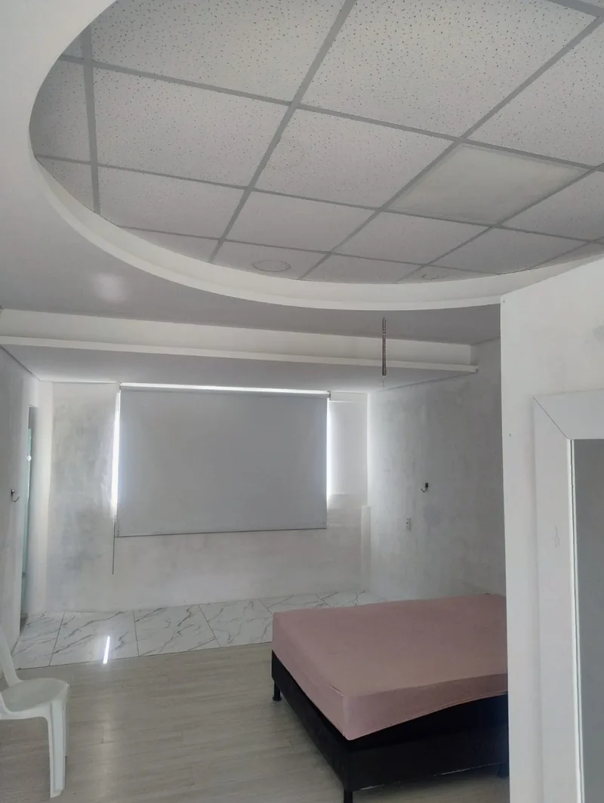
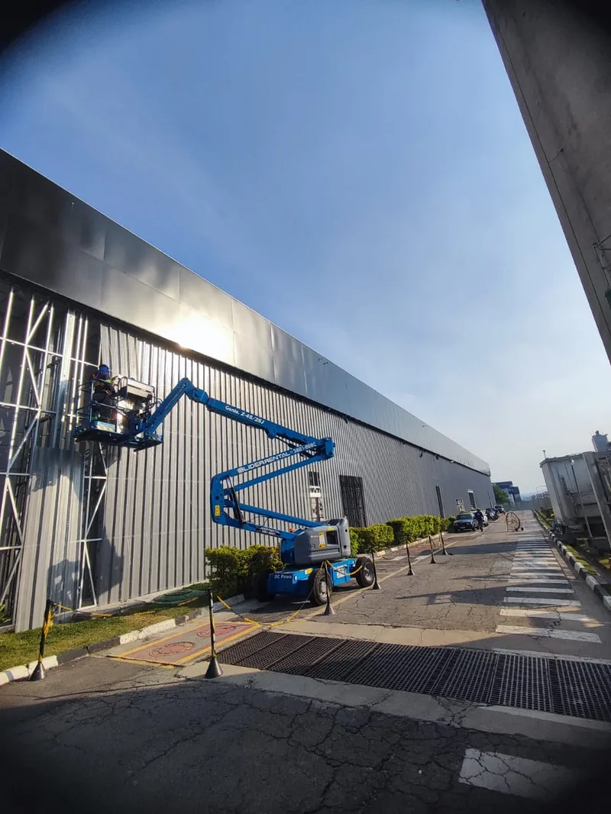
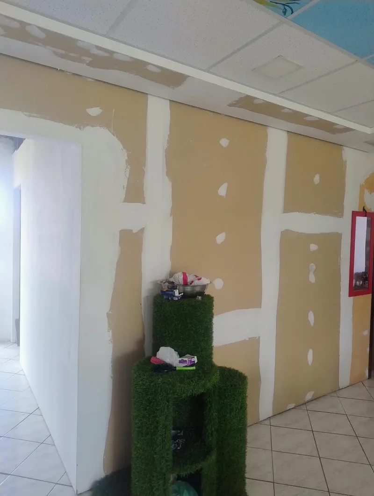
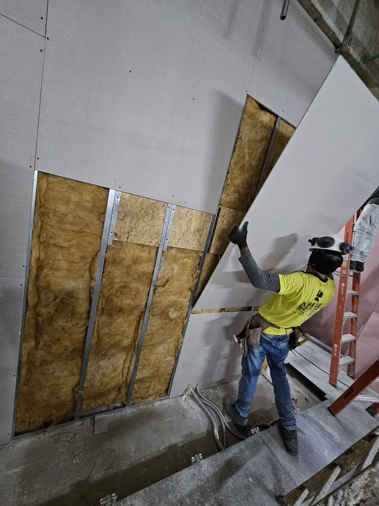

Forros e tetos
Forro de gesso e de drywall para renovar o ambiente, corrigir o teto ou esconder instalações.
- Forro de gesso tradicional
- Forro de drywall (gesso acartonado)
- Rebaixamento de teto
- Soluções para cada ambiente
Gesso, drywall e decoração com acabamento de alto padrão. Há 25 anos transformando ambientes com soluções completas em gesso, drywall, estruturas metálicas e acabamentos personalizados. Do projeto à execução, cada detalhe é pensado para unir beleza, funcionalidade e qualidade.

Conhecimento acumulado em diferentes tipos de projetos e acabamentos.
Atendimento desde pequenos reparos até projetos complexos e obras de alto padrão.
Conhecimento de estruturas, materiais e técnicas para entregar resultados bem executados.
Soluções que valorizam o ambiente, com atenção aos detalhes, formatos e acabamentos.
Planejamento e execução dentro do prazo combinado, com busca pela conclusão antecipada quando possível.
Auxílio na escolha de materiais, soluções construtivas e detalhes de acabamento.
Cada categoria pode ser contratada isoladamente ou combinada em uma só obra.
Forro de gesso e de drywall para renovar o ambiente, corrigir o teto ou esconder instalações.
Sancas que valorizam a iluminação e a arquitetura, inclusive curvas e redondas.
Paredes e fechamentos que organizam o espaço.
A base que garante alinhamento e precisão.
Detalhes que dão personalidade e preparam a superfície para pintura.
Recuperação e renovação do que já existe.
Serviços ligados aos sistemas e materiais adequados ao projeto. O desempenho acústico, térmico ou estrutural depende de avaliação técnica e não é prometido sem ela.
Obras de pequeno, médio e grande porte.
Não sabe por onde começar? Envie fotos do ambiente e explique o que deseja executar.
Dos formatos tradicionais às estruturas curvas, redondas e personalizadas, cada projeto é executado com atenção à estrutura, aos materiais e ao acabamento. Edilson João atende projetos que exigem precisão, criatividade e cuidado em cada etapa.




Uma seleção de trabalhos por tipo de serviço. Toque em uma foto para ampliar.
Todas as fotos são de serviços executados por Edilson João. O portfólio é atualizado aos poucos com novas obras.
Edilson está disponível para colaborar com arquitetos, engenheiros, designers, construtoras e responsáveis por obras, em projetos residenciais, comerciais e corporativos.
Clientes residenciais, proprietários, empresas, escritórios, lojas, profissionais de projeto e de obra. O atendimento é combinado conforme o serviço e as características de cada trabalho.
ResidencialComercialCorporativoArquitetos e engenheirosDesignersConstrutorasExplique o que deseja realizar.
Fotografias do local e, se possível, referências visuais, medidas e desenhos.
O serviço é avaliado quanto a necessidades, complexidade e localização. O valor pode variar conforme a distância, e eventuais custos de visita são combinados antes.
Com serviço, materiais, preço e prazo alinhados, o trabalho é programado e executado conforme o combinado.
Edilson fornece a mão de obra. Os materiais não estão incluídos e são tratados separadamente com o cliente.
Atendimento em São Paulo e região, conforme localização e características do projeto. O orçamento é calculado de acordo com o serviço e a distância. Informe bairro, cidade e tipo de serviço ao pedir orçamento.

Edilson João atua há 25 anos no mercado de gesso, drywall, estruturas metálicas e acabamentos. Sua experiência foi construída na prática, por meio da execução de diferentes tipos de obras, desde serviços residenciais até projetos de alto padrão com detalhes arquitetônicos complexos.
Seu trabalho combina conhecimento de estruturas e materiais, atenção ao acabamento e compromisso com os objetivos de cada cliente.
Seja em uma pequena reforma, em um projeto de decoração ou em uma obra comercial detalhada, o objetivo é oferecer execução cuidadosa, resultado visual moderno e soluções adequadas a cada ambiente.
Edilson João25 anos de experiência, construída na prática.Forros de gesso, drywall, sancas, estruturas metálicas, divisórias, decoração, acabamentos, reparos, reformas e projetos personalizados.
Sim. O atendimento contempla serviços pequenos e grandes, de acordo com as características do trabalho.
Sim. É possível trabalhar com desenhos técnicos, projetos de profissionais, referências visuais e ideias dos próprios clientes.
Entre em contato pelo WhatsApp e envie fotografias do local, uma descrição do serviço e a cidade ou região onde será executado.
O valor é avaliado conforme o serviço e a distância. Eventuais custos de visita devem ser combinados previamente.
Não. Edilson fornece a mão de obra, e o fornecimento dos materiais deve ser combinado separadamente.
Sim. O atendimento contempla clientes residenciais, empresas e projetos comerciais e corporativos.
Há garantia relacionada à qualidade de execução, ao funcionamento e à durabilidade do serviço, conforme as condições acordadas para cada trabalho. Os termos e limites são informados antes da contratação.
Depende do tipo de serviço e da complexidade do projeto. O cronograma é alinhado durante o orçamento.
Envie fotos do local, conte o que você deseja realizar e receba uma avaliação inicial do seu projeto. Do serviço mais simples aos acabamentos personalizados, Edilson João está disponível para conversar sobre a melhor solução para sua obra.
Edilson João
São Paulo e região, conforme avaliação
WhatsApp: +55 11 91513-6969
Informe bairro, cidade e tipo de serviço, e envie fotos do local.